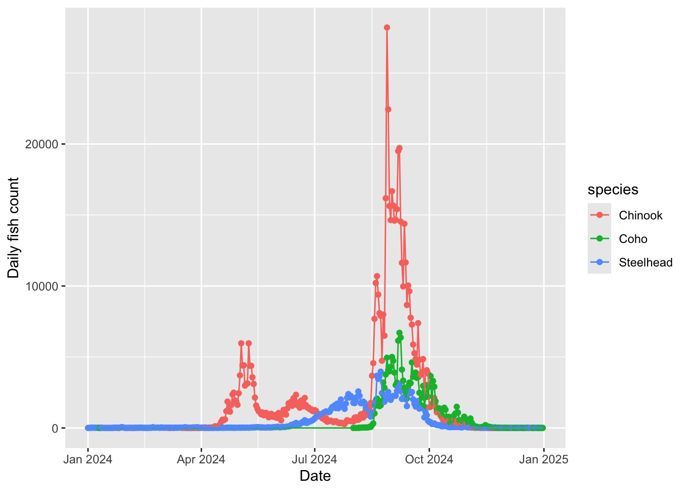
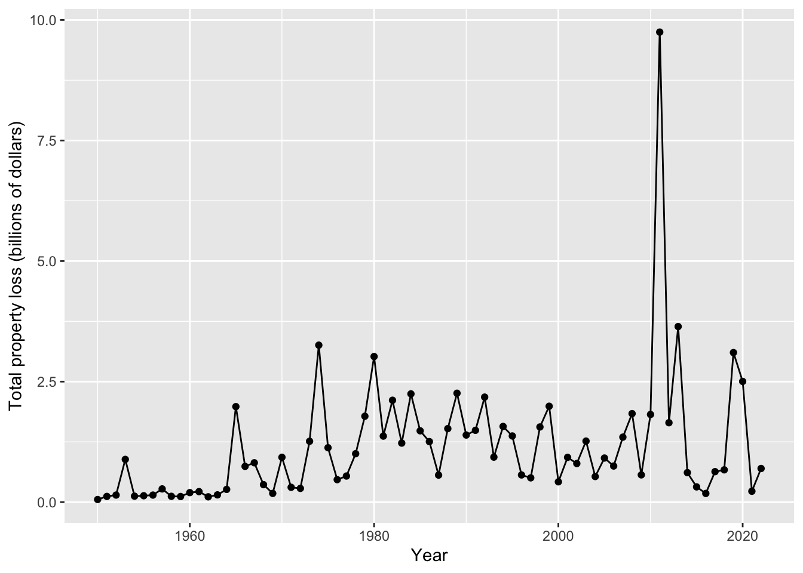
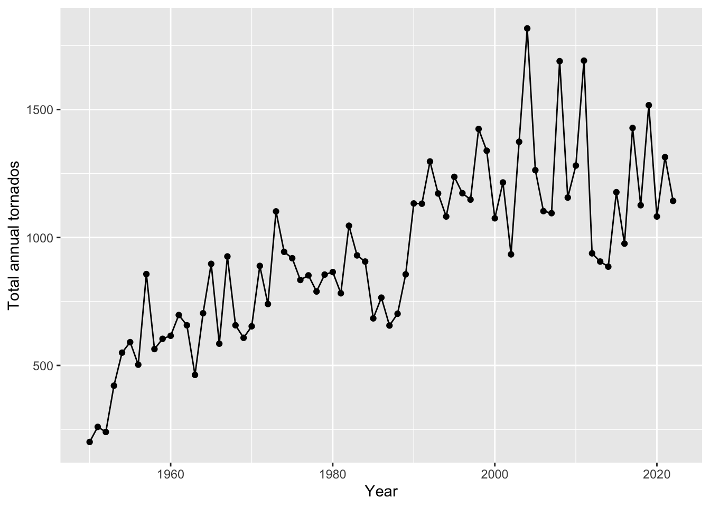
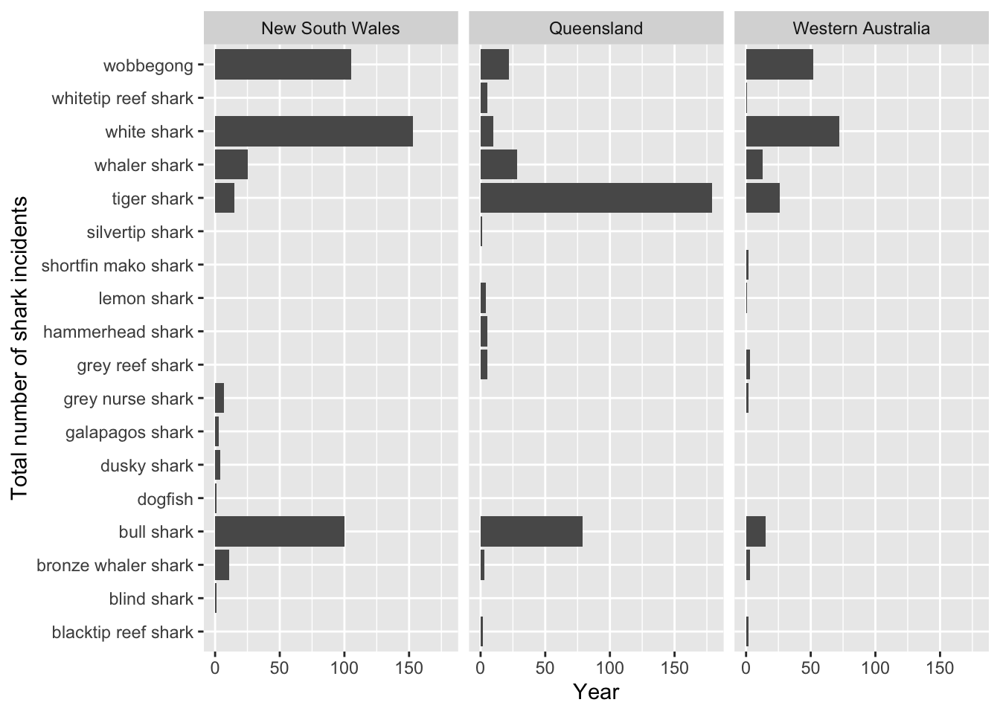

# copy paste this into the console
?themeWorkshop dates: April 24 (Thursday), April 25 (Friday)
1. Summary
Packages
tidyverse
Operations
Review
- read in data using
read_csv()
- visualize data using
ggplot()
- modify theme elements using
theme()
- use built-in themes using
theme_()
- modify colors using
scale_color_()andscale_fill_()functions
- create multi-panel plots using
facet_wrap()
- make line plots using
geom_point()andgeom_line()
- group data using
group_by()
- summarize data using
summarize()
- chain functions together using
|>
- filtering observations using
filter()
- manipulate columns using
mutate()andcase_when()
Data sources
The fish migration data is from the Columbia River DART (Data Access in Real Time) on fish migration through the Columbia River Basin in 2023.
The shark incident data is from Riley et al.
The tornado data is from the NOAA National Weather Service Storm Prediction Center.
2. Code
Today’s topic
We’re going to be exploring different ways to customize plots in ggplot2 (remember that ggplot2 is a package within the tidyverse, which you already have installed).
Each group will be responsible for creating a figure manipulating your assigned plot component. You will spend some time exploring each part and creating a figure together. After you are done, you’ll compile slides to teach the class
a) what your assigned plot component is (what it does) and
b) how to manipulate it (in code).
Your challenge is to make the ugliest plot you can! Change the colors, line types, line widths, etc. - whatever your heart desires to make a fundamentally ugly plot.
Resources
First, look up the function. In the Console, type a question mark, then your function name. For example:
You can do this with any function - whenever you want to know what it does, just look it up in the Console by hitting ? then the function name.
Read about your function. Make sure you understand the arguments, and decide which ones are relevant to you.
Second, see these resources for some explanation of themes and customization:
- ggplot2tor
- Jumping Rivers
- theme elements from ggplot2 handbook
- built in themes from ggplot2 handbook
Code
1. Set up
Packages and data
# packages
library(tidyverse)
# data
# salmon data
salmon <- read_csv("adultdaily_1745380588_196.csv")
# tornado data
tornados <- read_csv("tornados.csv")
# shark data
sharks <- read_csv("sharks.csv")Cleaning
Salmon
# create new clean object from salmon
salmon_clean <- salmon |>
# making sure the date is read as a date
mutate(Date = mdy(Date)) |>
# selecting date and 3 salmonid species
select(Date, Chin, Stlhd, Coho) |>
# making the data frame longer
pivot_longer(cols = Chin:Coho,
names_to = "species",
values_to = "daily_count") |>
# mutating species column to display species names in full
mutate(species = case_when(
species == "Chin" ~ "Chinook",
species == "Stlhd" ~ "Steelhead",
TRUE ~ species
)) |>
# filter to only include dates after December 31st 2023
filter(Date > as_date("2023-12-31")) |>
# take out any missing values
drop_na(daily_count)Tornados
# create new clean object from tornados
tornados_clean <- tornados |>
# group by year
group_by(yr) |>
# calculate total property loss in dollars, sum number of tornados, calculate total property loss in billions of dollars
summarize(total_property_loss = sum(loss, na.rm = TRUE),
number_tornados = length(yr),
total_property_loss_bil = total_property_loss/1000000000) |>
# ungroup the data frame (useful if you're going to do any further summarizing steps)
ungroup() 2. Basic visualization
a. Daily counts of salmon through Bonneville Dam in Columbia River Basin, Oregon in 2024
# base layer: ggplot
salmon_plot <- ggplot(data = salmon_clean,
# aesthetics: x-axis, y-axis, and color
aes(x = Date,
y = daily_count,
color = species)) +
# first layer: points
geom_point() +
# second layer: line
geom_line() +
# labels
labs(x = "Date",
y = "Daily fish count")
# display the plot
salmon_plot
b. Total property loss (in dollars) due to tornados in US from 1950-2022
# base layer: ggplot
tornado_property_loss_plot <- ggplot(data = tornados_clean,
# aesthetics: x-axis, y-axis
aes(x = yr,
y = total_property_loss_bil)) +
# first layer: points
geom_point() +
# second layer: line
geom_line() +
# labels
labs(x = "Year",
y = "Total property loss (billions of dollars)")
# display the plot
tornado_property_loss_plot
c. Total annual tornados in US from 1950-2022
# base layer: ggplot
tornado_count_plot <- ggplot(data = tornados_clean,
# aesthetics: x-axis, y-axis
aes(x = yr,
y = number_tornados)) +
# first layer: points
geom_point() +
# second layer: line
geom_line() +
# labels
labs(x = "Year",
y = "Total annual tornados")
# display the plot
tornado_count_plot
d. Total number of shark incidents in New South Wales and Queensland from 1791-2022
# base layer: ggplot
shark_plot <- ggplot(data = sharks_clean,
# aesthetics: x-axis, y-axis
aes(x = n,
y = shark_common_name)) +
# first layer: columns to represent counts
geom_col() +
# faceting by state
facet_wrap(~ state) +
# labels
labs(x = "Year",
y = "Total number of shark incidents")
# display the plot
shark_plot
3. Plot components
As everyone is going through their plot components, take notes in each section.
a. strip in theme()
Demonstrate how to:
- change the background
- change the placement
- change the text size and font
Note: you may want to use the shark_plot for this theme element.
# insert code here for your individual plotCode for the plot your group made:
# insert code here for your group plotb. plot in theme()
Demonstrate how to:
- change the plot margin
- change the plot background
- change the plot title, subtitle, and caption text position and color
Note: you will have to add a title, subtitle, and caption to the plot you choose to manipulate.
Code for your own independent exploration:
# insert code here for your individual plotCode for the plot your group made:
# insert code here for your group plotc. panel in theme()
Demonstrate how to:
- change the panel border
- change the panel major grid lines (vertically and horizontally, in separate arguments)
- change the panel minor grid lines (vertically and horizontally, in separate arguments)
- change the panel background
Code for your own independent exploration:
# insert code here for your individual plotCode for the plot your group made:
# insert code here for your group plotd. legend in theme()
Demonstrate how to:
- change the legend frame
- change the legend key size
- change the legend text size
- change the legend position
- change the legend row numbers
Note: you may want to use the salmon_plot for this theme element.
Code for your own independent exploration:
# insert code here for your individual plotCode for the plot your group made:
# insert code here for your group plote. axis in theme()
Demonstrate how to:
- change the axis text color and font - change the axis tick length (major and minor ticks)
- change the axis line colors and line types
Code for your own independent exploration:
# insert code here for your individual plotCode for the plot your group made:
# insert code here for your group plotf. scale_color or scale_fill functions
Note: use the shark plot for scale_fill and any other plot for scale_color
Demonstrate how to:
- use a color palette package
- apply it to a color scale
Code for your own independent exploration:
# insert code here for your individual plotCode for the plot your group made:
# insert code here for your group plotg. built in themes (theme_) with your own customization using theme()
Demonstrate how to:
- use a built in theme and
- change additional components using the
theme()elements of your choice
Code for your own independent exploration:
# insert code here for your individual plotCode for the plot your group made:
# insert code here for your group plot